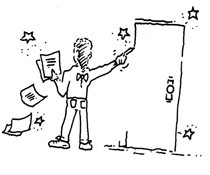
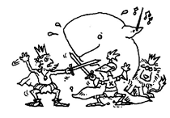

Stories
Child’s Play Touring Theatre is ALWAYS accepting stories and poems written by young people. If you have a story that you would like to be read and considered by our group, please go to the next section to write and submit your story. Whether you are a young writer or a teacher, be sure to read our story submission story guidelines before submitting your story. If you would like to read some stories or poems, take a look at some past stories written by kids which have inspired performances in Child's Play's repertory! We also have a help and idesa section and writing tools, frequently asked questions, links and overall inspiration.
Write Your Story
Privacy Statement
When Child's Play Touring Theatre receives children’s stories and poems, we only publish the information that the children and their parents allow us to. If you would like your child to remain anonymous we will only include their first name and grade level that they are in. Please make special note of your wishes somewhere in your submitted story or poem!
 Story Guidelines
How Child's Play Selects Material
This year child's play actors will read thousands of new stories and poems by children. Finding ones that we will perform is a treasure hunt, with great rewards. Briefly, here are some of the elements we look for during the reading process.
Child Guidelines:
1. You can write about anything. It can be serious or funny or silly or sad or…you get the picture!
2. You can write a story, a poem, an essay, a play, or a song. You can make it as long as you want or as short as you want.
3. We love drawings and artwork. Please send them with your story or poem. (We also want to listen to your songs and even watch your movies! Submit them to us and maybe we'll put them into our plays.)
4. If you are sending your work in the mail, write as clearly and neatly as you can. Have your classmates read your writing for good handwriting and spelling. Make sure you check your spelling if you are sending your story online too!
5. Remember, you are the writer. That means no copying from a book, story you’re studying in class, your neighbor, a television show, or a movie you’ve just seen.
Teacher Guidelines:
Encourage your students to be as creative and original as possible. Here are some elements to what we would view as an ideal story or poem for theatrical adaptation.
1. STRONG STORY LINE Stories with a well-defined beginning, middle, and end are essential. Given a well-constructed and imaginative plot, our actors can develop additional dialogue and action, expanding and adding detail to the original work.
2. COLORFUL CHARACTERS For actors, the most exciting characters to portray are those that are clearly defined by the author. We enjoy authors who provide detailed character descriptions, including their dress, manner, likes, dislikes, relationships, etc.
3. DIALOGUE Many children have a talent for natural-sounding dialogue. In writing conversations for their characters, they often reveal much about themselves.
4. MORAL OR THEMATIC STATEMENT Our goal is to educate as well as to entertain. Many of the lessons we teach are from authors themselves. We appreciate stories where we can communicate a moral or thematic point the young writer feels strongly about.
5. TOPICALITY We are delighted to find stories that include children's thoughts on current world and national problems or events. They often provide unique solutions and perspectives on so-called adult matters.
6. STAGING REQUIREMENTS This refers to the physical production of the new plays. Influencing factors are: number of characters, actors, scenes and settings; special props, costumes or set needs; opportunities for adding music or dance; and audience participation segments.
7. LIFE THROUGH A CHILD'S EYES When writing, children often reveal much more about themselves and their feelings than they realize. Their stories are influenced by their upbringing, environment, social and economic stature, prejudices, etc. Works which demonstrate these influences or express the child's individual view of the world are an important part of CHILD'S PLAY.
Help Ideas
Some suggestions for story/poetry topics:
Real Life Problem(s)
Good problems make good stories. Have your students identify real life problems from their own personal experience. Then have the students select a problem and find a way to solve that problem within the story.
Family Anedotes;
Every family has stories about an event that was so funny or frightening when it happened that the story is told and retold. Have your students recall family anecdotes and turn them into written recollections.
Emotional Recall
We think that some of the most interesting writing from children is when they talk about how something makes them feel. Have your students recall an event to which they had an emotional response and then turn that into either a story or a poem.
Last Night I Dreamt
Stories can be found in dreams. Have your students start a dream journal record their dreams, then choose a particular dream to develop into a story.
Read stories and Poems
If you would like to READ SOME STORIES OR POEMS, take a look at some past stories written by kids which have inspired performances in Child's Play's repertory!
View some stories written by children:
Stories.pdf
or view some poems: Poems.pdf